El derecho a una vivienda digna, reconocido en el artículo 51 de la Constitución Política de 1991, busca garantizar que todas las personas y sus familias accedan a un espacio adecuado en el que puedan desarrollar su vida en condiciones de seguridad, bienestar y dignidad.
En este sentido, la vivienda digna constituye una condición esencial para el ejercicio de otros derechos, como la salud, la intimidad, la vida digna y el libre desarrollo de la personalidad. Por esta razón, corresponde al Estado adoptar medidas y formular políticas públicas, en especial en materia de vivienda de interés social, que hagan efectivo este derecho y reduzcan las desigualdades en el acceso a condiciones habitacionales adecuadas.
¿Qué es una vivienda? Según la RAE es un lugar cerrado y cubierto construido para ser habitado por personas. Es género de vida o modo de vivir. La vivienda es una edificación cuya principal función es ofrecer refugio y habitación a las personas, protegiéndolas de las inclemencias climáticas y de otras amenazas.
De acuerdo con ONU-Hábitat, son siete los elementos que toda vivienda debe reunir para ser habitada adecuadamente: ubicación, seguridad de la tenencia, disponibilidad de servicios, uso de materiales adecuados, instalaciones e infraestructura, asequibilidad y habitabilidad. Esta última se refiere a las condiciones que garantizan la seguridad física de sus habitantes, les proporcionan un espacio suficiente y los protegen contra el frío, la humedad, el calor, la lluvia, el viento, otros riesgos para la salud y los peligros estructurales.
La vivienda está conformada por áreas destinadas a dormitorios, sala y comedor, así como por áreas de servicio: los baños, la cocina y la zona de aseo. Puede ser una casa, entendida como una edificación constituida por una unidad de vivienda, o un apartamento, entendido como una unidad que forma parte de una edificación en la que existen otras viviendas.
Es un espacio independiente y separado, habitado o destinado para ser habitado por una o más personas; vivienda independiente, porque tiene acceso directo desde la vía pública, caminos, senderos o a través de espacios de circulación común (corredores o pasillos, escaleras, ascensores, patios). Las personas que habitan una unidad de vivienda no pueden ingresar a la misma a través de áreas de uso exclusivo de otras unidades de vivienda, tales como dormitorios, sala, comedor, entre otras; vivienda separada, porque tiene paredes u otros elementos, sin importar el material utilizado para su construcción, que la delimitan y diferencian de otros
En el ámbito distrital, el POT determinó un estándar de 18 m2 por habitación. Es decir, una vivienda con dos habitaciones destinada a alojar a dos personas no puede tener un área inferior a 36 m2. Por ejemplo, un hogar conformado por padre, madre e hijo podría habitar esas mismas dos habitaciones, de modo que tres personas satisfagan sus necesidades básicas de vivienda en un área no inferior a 36 m2.
Otra clasificación es la Vivienda de Interés Social-VIS y Vivienda de Interés Social Prioritaria-VIP. La primera es aquella que reúne los elementos que aseguran su habitabilidad, estándares de calidad en diseño urbanístico, arquitectónico y de construcción cuyo valor máximo es de 135 salarios mínimos legales vigentes-SMLV (y en ciudades con más de 1 millón de habitantes 150). En tanto que la segunda es aquella vivienda de interés prioritario cuyo valor máximo es de 90 SMLV.
· Casa: Edificio o estructura destinada a ser habitada, generalmente unifamiliar y con una o pocas plantas o pisos.
· Casa tienda: Establecimiento comercial que también sirve como vivienda para el comerciante que lo opera.
· Rancho: Es un tipo de vivienda rural o semiurbana propia de países de América como Argentina, Bolivia, Brasil, Uruguay, Chile, Colombia, Guatemala, Paraguay y Venezuela, de características casi siempre pobres.
· Inquilinato: Forma de vivienda colectiva, generalmente en casas adaptadas para albergar a varias familias de bajos recursos, donde cada familia ocupa un cuarto y comparten espacios comunes. También puede referirse al acto de arrendar una vivienda o parte de ella. Los inquilinatos pueden presentar problemas de hacinamiento, falta de servicios básicos y condiciones de higiene precarias.
· Bifamiliar: Edificio que alberga dos unidades de vivienda independientes, generalmente con dos plantas, donde cada planta está diseñada para ser habitada por una familia diferente.
· Apartamento: Unidad de vivienda que comprende una o más habitaciones diseñadas para proporcionar instalaciones completas para un individuo o una familia.
· Vivienda multifamiliar: edificio o complejo que alberga múltiples unidades de vivienda, permitiendo la convivencia de varias familias o individuos en un mismo espacio.
2.1. Antecedentes de la vivienda en Bogotá
2.1.1 Bogotá y la vivienda
La vivienda en Bogotá ha experimentado una evolución significativa desde sus orígenes indígenas hasta la actualidad, reflejando cambios sociales, económicos y urbanísticos. Inicialmente, las comunidades indígenas habitaban viviendas circulares de materiales como madera y guadua, con techos de paja o caña. La llegada de los españoles trajo consigo la construcción de casas con tapia pisada, tejados de estilo mudéjar, zaguanes y patios, adaptándose al clima frío y a la estructura social de la época.
Durante el siglo XX, Bogotá experimentó un rápido crecimiento urbano, impulsando la construcción de barrios populares y la introducción de modelos de vivienda moderna, incluyendo edificios de apartamentos. Etapas clave en la evolución de la vivienda en Bogotá:
2.1.2. Época Prehispánica
Las comunidades indígenas habitaban viviendas circulares o rectangulares, con un solo espacio que servía de dormitorio, cocina, área para comer y recinto social familiar. No existía un lugar específico para los servicios sanitarios, estas necesidades se hacían fuera de la vivienda. Construidas con materiales como madera, guadua, bahareque y techos de paja o caña.
Esta comunidad que habitaba regularmente en el pie de monte de la cordillera se ubicaba en dos lugares de la sabana. En las épocas secas y de cosecha se localizaban en la zona de lo que hoy es el municipio de Bojacá. En la época de lluvias cuando la sabana se anegaba y se habían recogido las cosechas se ubicaban en la zona alta que era el lugar donde vivía el Zaque y que se llamaba Teusaquillo.
Se agrupaban en zonas preferiblemente planas o con poca inclinación dentro de un cercado en forma circular, en el centro estaba la vivienda del Zaque o jefe del grupo.
2.1.3. Época Colonial y Republicana del siglo XIX
A raíz de la conquista y la fundación de Bogotá esta se construyó basada en las leyes de Indias que definió la forma como se debían organizar las ciudades y es cuando se planifica y desarrollan los primeros asentamientos alrededor de la plaza principal. Aparecen entonces los primeros barrios o parroquias como inicialmente se denominaron, La Catedral, Candelaria, Santa Bárbara. Le siguen San Victorino, Las Nieves y empiezan a incorporarse los barrios populares como Egipto, Las Cruces y Belén. El trazado urbano es muy homogéneo, no así los procesos de lotificación que son heterogéneos por manzanas. Ahí es donde con iniciativa individual se desarrollan las viviendas basadas en los principios constructivos importados de España básicamente siguiendo la tipología de las construcciones y viviendas andaluzas usando los materiales de la zona, como el adobe, tapia pisada, piedra, madera, paja, teja de barro cocido.
En la colonia la vivienda popular se desarrolla en muy precarias condiciones constructivas y ambientales y su tipología va desde ranchos de bahareque, caña brava, paja, pisos en tierra, hasta viviendas de adobe, madera y tejas de barro. En la inmensa mayoría las funciones de la vivienda se desarrollan en un solo espacio. Estas viviendas carecían de iluminación, ventilación, agua, desagües y letrinas, usaban la vía pública como excusado. Los afluentes y quebradas que bajan de los cerros hacia el rio Bogotá se usaban como los lugares para botar todos los desechos generando mucha contaminación
Una situación que se presenta a lo largo del siglo XIX es la aparición de los inquilinatos donde hay un alto grado de hacinamiento y de insalubridad e inseguridad. El desarrollo de la ciudad en este periodo se realiza con controles muy precarios, específicamente en lo referente a las viviendas de las clases sociales más vulnerables. Estas zonas carecían de los más esenciales servicios privados y públicos y su implantación obedeció a procesos informales sin control alguno. Esta situación continuó durante todo el periodo colonial y hasta finales del siglo XIX.
El crecimiento de la ciudad en el primer siglo de la vida republicana fue relativamente lento, la siguiente gráfica muestra el crecimiento de los barrios y viviendas en el siglo XIX.
Tabla 8. Densidades, población y viviendas por parroquia 1801-1907
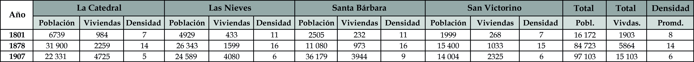
Fuente: Elaboración Sociedad de Mejoras y Ornato de Bogotá con base en Germán Mejía Pavony.2.1.4. Siglo XX
A finales del siglo XIX, se proponen los desarrollos de barrios populares o para los pobres y la prohibición de la vida en las tiendas ya que se consideraban antihigiénicas y ausentes de moralidad, donde vivían los pobres en situación de hacinamiento y sin ningún servicio básico. Este problema fue el elemento que las diferentes administraciones de la ciudad tuvieron hasta bien entrado el siglo XX. Las condiciones para comienzos de siglo XX se pueden inferir del censo de 1907, de acuerdo con el cual, el número de viviendas de precarias condiciones representadas en tiendas, ranchos y, en menor medida, en casas-tiendas superaban la mitad de las existentes en la ciudad.
Tabla 9. Tipos de vivienda por barrios de acuerdo con el censo de 1907
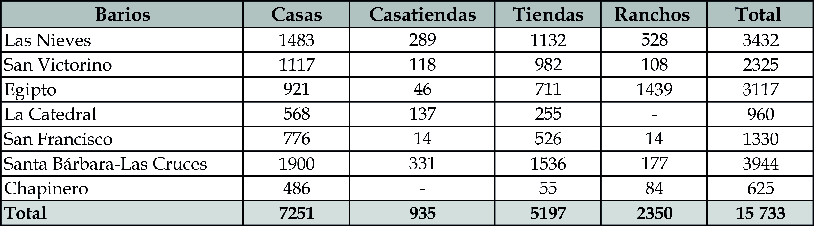
Fuente: El Nuevo Tiempo, 1907.De 1914 hasta 1944 el proceso de urbanización tuvo un crecimiento inusitado. La ciudad creció en 2800 ha superado las 800 ha que había hasta 1914. El crecimiento de la ciudad en este periodo no tuvo precedentes, hubo una excepcional incorporación de las parcelas cercanas a la ciudad al perímetro urbano disparando el valor de la tierra en forma geométrica. Este es un periodo muy valioso porque en esta época se empieza una verdadera incorporación de servicios públicos con este “Boom” urbanístico e inmobiliario. En el año 1923 aparece el primer plan de desarrollo denominado Bogotá futuro, Acuerdo 23 donde se planifica y reglamenta el proceso de crecimiento de la ciudad. Aparecen las oficinas que regulan el desarrollo urbano y que normatizan las construcciones lideradas por arquitectos y urbanistas como Karl Brunner y su Manual de Urbanismo.
La ciudad se empieza a modernizar urbanísticamente incorporando los servicios públicos de acueducto, alcantarillado, energía y comunicaciones, así como las normas para el diseño de la vivienda incorporando estándares europeos y norteamericanos.
Se creó el Banco Central Hipotecario (1932) entidad bancaria estatal destinada a otorgar crédito en condiciones favorables y más competitivas que la banca existente en ese momento. Se convirtió no solo en una entidad crediticia sino una desarrolladora y gestora de importantes proyectos inmobiliarios y urbanos. Siendo ejemplo para no solo constructoras independientes sino para diferentes entidades nacionales e internacionales. Desafortunadamente fue liquidado en el año 2001.
El Instituto de Crédito Territorial (1939) fue creado para proveer vivienda económica a sectores de una clase media naciente y se convirtió en líder en los proyectos urbanos proveyendo conjuntos de una altísima calidad no solo urbanística sino de los diseños de vivienda señalando una ruta de cómo se debe planear no solo proyectos de vivienda sino de ciudades con alta calidad de vida urbana. El ICT realizó múltiples proyectos de vivienda unifamiliar, bifamiliar y multifamiliar en la ciudad hasta su clausura en 1991.
Dentro de este crecimiento el sector informal influyó tanto que en 1940 se crea el perímetro urbano (Acuerdo 15) para tratar de frenar las urbanizaciones clandestinas.
Las iniciativas de la iglesia, de la industria y organizaciones obreras generan los procesos de urbanización para la clase trabajadoras y de allí surgen los barrios Primero de Mayo, Restrepo, Santa Lucia, Claret y muchos otros. Surgieron también los barrios populares, impulsados por la creación de entidades como la Caja de Vivienda Popular (1942), que buscaban proporcionar vivienda digna a sectores de bajos ingresos, liderando el proceso de dotación lotes y viviendas dignas como ejemplo de calidad y que hoy sigue realizando proyectos de vivienda ya sea de desarrollo propio, por autoconstrucción o por medio de subsidios de vivienda. Los primeros barrios de origen privado son Villa Javier, Ricaurte, La Paz y Marco Fidel Suarez destinados a la clase obrera fueron producto del estímulo que produjo el Acuerdo 10 de 1902.
La Caja de Vivienda Militar (1947) creada para entregar vivienda a los miembros de las F.F.A.A. en todos los niveles también ha desarrollado proyectos icónicos que han marcado de forma positiva el desarrollo de la ciudad y unos parámetros de lo que debe ser la vivienda digna.
También se inicia la creación de firmas inmobiliarias que se dedican a urbanizar como Antonio Izquierdo, Ospinas y Cía., Beatriz Melo, Karl Brunner, Alex Koppel, Familia Mallarino.
El desarrollo inmobiliario se efectuó sin mucho control urbano, pero posteriormente a través del Departamento de Urbanismo liderado por Karl Brunner (Plan Brunner 1936), en ese tiempo se empezaron a delinear los parámetros de lo que debe ser el desarrollo inmobiliario. Es así como surgen los barrios de La Merced, Teusaquillo, Palermo y el Campín diseñados por ese Departamento. Estos desarrollos urbanos ya cuentan con espacio público, zonas verdes y con algunos equipamientos urbanos; empieza a cambiar el tejido urbano adquiriendo unas formas más orgánicas dándole al entorno otra tipología de implantación siguiendo parámetros de diseño de las ciudades europeas (Inglaterra, Francia, Austria) anteriores a la segunda guerra. Destacables también en esta tipología, son los barrios El Claret, Inglés, Santa Lucia, Antonio Nariño y Restrepo. Es de anotar que el diseño de estos barrios es para un uso exclusivamente de viviendas unifamiliares.
En los gobiernos de Alfonso López Pumarejo y Enrique Olaya Herrera ante los movimientos del modernismo en Europa y más específicamente de los últimos movimientos modernistas en urbanismo y arquitectura trajeron al país a tres arquitectos, Leopoldo Rother, Bruno Violi y Vicente Nasi, coincidiendo además con la creación de la Facultad de Arquitectura de la Universidad Nacional, se desarrolla una manera diferente de organizar la ciudad basado en los conceptos de ese movimientos surgidos en Alemania denominado Bauhaus y en los Estados Unidos llamado Art Deco. De allí en adelante surge la Bogotá contemporánea que se refuerza con el Plan Regulador de 1948 elaborado por Le Corbusier.
Se inicia así la historia de una ciudad contradictoria, la de una urbe reglamentada y ordenada y la de una informal anárquica (no caótica). Por un lado, surgen las compañías inmobiliarias privadas que empiezan a dar respuesta a vertiginoso crecimiento de la ciudad consecuente con el desarrollo y crecimiento económico del país. Es así como empieza el incremento del tejido urbano hacia el norte de la ciudad urbanizando las haciendas del piedemonte sabanero conectando inicialmente Chapinero con el centro tradicional, barrios como Marly, Bosque Calderón, Quinta Camacho, Javeriana, El Nogal y La Cabrera. Hacia el centro y el sur, el sector privado también desarrolla Barrios como Pensilvania, el Listón, Estación Central, La Fraguita entre otros. Todos estos barrios desarrollados son de vivienda unifamiliar y de diferentes niveles socio económicos, desde vivienda obrera hasta niveles de altos ingresos.
El rápido crecimiento de Bogotá con una normativa incipiente y muy restrictiva estimula el desarrollo informal y la ocupación ilegal por medio de invasiones a terrenos estatales o urbanizaciones piratas que surgen sin acogerse a ninguna norma urbana. Podemos ver ejemplos de barrios como Granjas de Santa Sofía, La Fraguita, Ramírez, San Cristóbal Sur, Santa Rosa, La Peña, Rincón de Suba y La Marichuela, entre otros. Todos estos barrios surgen sin tener acceso a ningún servicio público y en condiciones de desarrollo muy precarias, sobre todo en las urbanizaciones piratas en las cuales el promotor ilegal deja a los nuevos propietarios abandonados a su suerte. En las invasiones por lo menos hay una organización comunitaria que provee un respaldo para su proceso de legalización.
A partir de 1951 con el Plan Piloto y una población cercana a los 760 000 habitantes y 41100 ha que es la reglamentación del Plan Regulador el crecimiento de la ciudad se dispara pues pasa de estas cifras a 6 300 000 habitantes con 33 600 has cuando se expide el primer Plan de Ordenamiento Territorial con el Decreto 619 del 2000. En este lapso se expiden varias normas que pretenden regular el crecimiento de la ciudad así: Acuerdo 65 de 1967, Decreto 1119 de 1968, Fase II de 1972, Plan de Desarrollo Urbano de 1975, Acuerdo 7 de 1979 y el Acuerdo 6 de 1990, normas que buscaron reglamentar el desarrollo de Bogotá y que solo lo lograron de una manera parcial pues el sector informal supero con creces a la normatividad expedida. La realidad urbana fue bastante diferente a la normativa urbana. Entre 1960 y 1990 la expansión urbana fue exponencial pues paso de unas 10 000 has y 1 500 000 hab. aproximadamente a 24 500 ha y 5 000 000 de hab. El sector informal fue sin lugar a duda el actor principal en este proceso de crecimiento.
En los diferentes decretos y acuerdos se cambia sistemáticamente el perímetro urbano y sanitario para tratar de evitar se diría, inútilmente la expansión urbana sin orden alguno sobre todo en lo referente a las urbanizaciones piratas e invasiones.
Es pertinente hablar acá de la calidad de vida en los desarrollos informales. Al verlo desde el punto de vista urbanístico uno observa unos entornos urbanos llenos de múltiples de actividades con un sinnúmero de interrelaciones. El espacio público por deficiente que sea es lugar donde se realizan las actividades que unen a la comunidad. Entornos urbanos llenos de actividad y de vida urbana. La vivienda es un proyecto de vida y su desarrollo progresivo refleja ese descomunal esfuerzo personal y familiar por cumplir ese proyecto. La ausencia de asesoría en los temas funcionales y estructurales generan resultados muy negativos en los riesgos inherentes a la seguridad y en lo funcional las ocupaciones del 100 % de los predios genera inexistencia de iluminación y ventilación natural. Existe un gran riesgo estructural en estas construcciones progresivas que carecen de cálculos adecuados, sobre todo aquellas que superan los 2 pisos y están localizadas en zonas con mucha pendiente.
En cuanto a los desarrollos inmobiliarios desarrollados por el Estado y el sector privado se empiezan a transformar las viviendas unifamiliares generando importantes modificaciones sin las respectivas licencias de los entornos urbanos cambiando radicalmente su morfología. En muchos casos estos cambios generan una imagen de desorden y deterioro físico.
Se inicia también el desarrollo de vivienda multifamiliar en predios de vivienda unifamiliar aumentando significativamente la densidad y generando detrimentos en las cesiones urbanas y una sobrecarga en los servicios públicos.
Los cambios normativos de los diferentes decretos y acuerdos expedidos en este periodo permiten la densificación de predios localizados en barrios o urbanizaciones inicialmente destinados a vivienda unifamiliar sin ningún cambio en las cargas urbanas generando modificaciones en el tejido y volumetría urbana intensificando en forma geométrica los servicios y el espacio públicos previstos para una densidad mucho menor.
La creación de las Unidades de Poder Adquisitivo-UPAC, fue una medida usada para calcular el costo de algunos créditos de vivienda. Se implementó en 1972, por medio del Decreto 667, y llegó a su fin en 1999. Durante su periodo de vigencia, la UPAC funcionó como un instrumento que hacía que los créditos hipotecarios para la compra de vivienda y las cuentas de ahorro ajustaran su valor en función del Índice de Precios al Consumidor-IPC. Esta medida le dio un impulso inusitado al mercado inmobiliario.
En este periodo se inician los grandes proyectos inmobiliarios emprendidos por el Estado y el sector privado. En el sector público —BCH, ICT, CVP, CV— se realizaron barrios como el Quiroga, Polo Club, Quinta Mutis, Torres del Parque, Niza, Kennedy, Timiza, Paulo VI, Quirigua; proyectos inmobiliarios de una trascendencia muy importante y ejemplo de lo que es desarrollar proyectos de vivienda de alta calidad en lo urbano y en las viviendas desarrolladas. En el sector privado se destacan firmas como Ospinas y Cía., OLCSA, Mazuera, Inversiones Bogotá, Pedro Gómez y Cía., que desarrollaron proyectos inmobiliarios bien importantes y de gran impacto en la ciudad como Santa Isabel, Las Villas, Modelia, Chico, Santa Bárbara, La Calleja, Ciudad Jardín del Sur entre muchas otras. Estos son solo algunos ejemplos de cientos de barrios y urbanizaciones creadas en este periodo de 50 años donde la ciudad tuvo un crecimiento geométrico y donde la realidad urbana supero toda normatividad llegando la informalidad a cerca de un 60% del área urbana.
A partir de la clausura del ICT (1991) y el BCH (2001) el Estado opta por crear el INURBE entidad dedicada a otorgar solo subsidios a las viviendas económicas que se aplican individualmente y que también cerró en 2003. A partir de ese año el Ministerio de la Vivienda es quien otorga esos subsidios. A partir de la liquidación del INURBE y que el Ministerio otorga los subsidios, las cajas de compensación asumieron el papel de promotores de estos desarrollos subsidiados, como CAFAM, COLSUBSIDIO y COMPENSAR entre otras entidades.
Al final de la década de los noventa, se expide la Ley 388 de 1997 donde se ordena a todas las ciudades y municipios a elaborar un Plan de Ordenamiento Territorial. De ahí nace el Decreto 619 del 2000 y las revisión y ajustes con el Decreto 190 del 2004. Finalmente se desarrolló un nuevo POT, el que quedó consignado en el Decreto 555 de 2021.
El desarrollo inmobiliario de vivienda se transforma hacia proyectos de alta densidad en conjuntos cerrados ya sea en vivienda unifamiliar como en vivienda multifamiliar. En la ciudad a lo largo y ancho se desarrollan este tipo de proyectos. Es de anotar que se reglamenta la incorporación de las zonas de expansión previstas en el POT del año 2000 en el norte, en Usme y en la zona de Bosa-Kennedy mediante Planes de Ordenamiento Zonal y subsidiariamente con planes parciales. En el noroccidente cerca al rio Bogotá se desarrolló un gran polígono urbano con supermanzanas dedicadas preferencialmente a vivienda de interés social llamado Plan Parcial Gran Granada. Lo mismo sucedió en el Sur Oriente en la Localidad de Usme, alrededor del portal de TM.
Otro tanto se desarrolló en el norte de la ciudad al occidente de la autopista y en las faldas de los cerros de Suba, sobre la Av. Boyacá. Se desarrollan grandes polígonos de vivienda en diferentes zonas de la ciudad usando la modalidad de Planes Parciales de Desarrollo y Planes Parciales de Renovación y reactivando las zonas de expansión urbana definidas en el Decreto 619 de 2000 tanto la del norte como las del sur y el occidente. En estos veinticinco años del siglo XXI los grandes desarrolladores inmobiliarios privados han optado preferencialmente por el desarrollo de proyectos para Vivienda VIS y VIP. Los proyectos para los estratos medios y altos se siguen ubicando en las urbanizaciones tradicionales reemplazando inclusive edificios que habían reemplazado a las viviendas unifamiliares originales; Esto ocurre en barrios como el Chicó, La Cabrera, El Lago, Chapinero Alto, Palermo, El Nogal.
¿Y qué sigue? La dramática disminución demográfica en la ciudad generará profundos cambios en el desarrollo inmobiliario, Por un lado, una gran cantidad de unidades residenciales quedaran obsoletas por sus dimensiones y características y por el otro el negocio inmobiliario tiende a replantearse, la compra de inmuebles se está empezando a reemplazar por el arriendo. Ya el sueño de la vivienda como un proyecto de vida está siendo sustituido por otros objetivos y se está empezando a ver esto en el mercado inmobiliario. Ya se está empezando a ver proyectos que no son desarrollados para venta sino para ser arrendados. Esta popularizándose la modalidad de la operación inmobiliaria. La ciudad para recuperar ese inmenso stock inmobiliario deberá emprender un masivo programa de renovación urbana muy seguramente similar o del estilo al que realizó en la década de los ochenta, el BCH con la subdivisión de vivienda o reciclaje de vivienda.
Esto desde luego plantea una profunda transformación de la ciudad que podría ser aprovechado para recuperar ambientalmente el sistema hídrico que conectan los cerros con el Rio Bogotá. La densidad urbana se modularía y la calidad de la vivienda en el entorno urbano mejoraría sustancialmente; renovación que sería ideal para los sectores informales que tienen todas las vulnerabilidades funcionales y estructurales.
La historia de la vivienda en Bogotá es un reflejo de la historia de la ciudad, con sus desafíos, logros y transformaciones, mostrando cómo la necesidad de un hogar ha moldeado, moldea y moldeara el paisaje urbano y la vida de sus habitantes.
2.2. Marco conceptual de la vivienda
Históricamente, uno de los propósitos vitales de la sociedad, ha sido encontrar solución a las necesidades de vivienda de los seres humanos. Hoy en día, una parte importante de los ingresos de los hogares se destina justamente a asegurar un techo bajo el cual habitar, ya sea que se trate de una vivienda arrendada o propia. En las circunstancias actuales de disponibilidad de suelo urbano, la progresión de los costos de construcción y de los ingresos económicos de las familias, ha hecho de la vivienda un bien sumamente preciado. Es imprescindible maximizar los espacios y conseguir unas condiciones mínimas de habitabilidad.
La RAE define la vivienda como un “lugar cerrado y cubierto construido para ser habitado por personas”, y por su parte, el DANE la define como “un espacio independiente y separado, habitado o destinado para ser habitado por una o más personas. Independiente, porque tiene acceso directo desde la vía pública, caminos, senderos o a través de espacios de circulación común (corredores o pasillos, escaleras, ascensores, patios). Las personas que habitan una unidad de vivienda no pueden ingresar a la misma a través de áreas de uso exclusivo de otras unidades de vivienda, tales como dormitorios, sala, comedor, entre otros. Separada, porque tiene paredes, sin importar el material utilizado para su construcción, que la delimitan y diferencian de otros espacios”.
La vivienda puede ser una casa, entendida como una edificación constituida por una sola unidad cuyo uso es el de vivienda, o un apartamento entendido como una unidad de vivienda que hace parte de una edificación en la cual hay otras unidades de vivienda. En general, la vivienda está constituida por unas áreas privadas, como las habitaciones, unas áreas sociales, como la sala y comedor, y unas áreas de servicio como los baños y la cocina.
2.3. Conceptos básicos
A continuación, se presentan los conceptos básicos asociados a la vivienda y al urbanismo, que se manejarán a lo largo de este texto y en el ejercicio práctico desarrollado en la Sección III, denominado “Concepción de la vivienda”:
Aislamiento posterior: Espacio libre de construcción que se debe dejar en la parte posterior de un lote. Su función es asegurar condiciones de iluminación, ventilación y privacidad en las construcciones, y su dimensión la define el Plan de Ordenamiento Territorial (POT).
· Alero: Se define como el borde del tejado que sobresale de las fachadas, dando protección contra la lluvia y el sol.
· Andén: Es el área paralela a las vías, destinada a la permanencia o tránsito de peatones. El tamaño del andén depende la normativa local y del tipo de vía en que esté trazado.
· Antejardín: Área libre comprendida entre la demarcación de una calle y la línea de construcción de un edificio. Funciona como una transición entre lo público y lo privado.
· Área bruta: Se define como el área total de un lote o predio.
· Área construida: Es la suma de las superficies de todos los pisos de una edificación, incluyendo estructuras, balcones y terrazas, entre otros.
· Área neta urbanizable: Es el área que se obtiene al restar del área bruta total de un predio, las áreas destinadas a la malla vial, servicios y suelo de protección, como bosques, humedales u otro elemento de valor ambiental.
· Área útil: Es el área de una vivienda, edificio o terreno que se puede usar de manera efectiva. Al contrario del área de construcción, al área útil se le restan también los espacios ocupados por estructuras y espacios no habitables, como balcones descubiertos.
· Áreas de servicio: Espacios de la vivienda que se destinan hacer actividades específicas para el bienestar de la persona, como la cocina y el cuarto de ropas.
· Áreas sociales: Espacios destinados a la socialización, esparcimiento, descanso y desarrollo de actividades comunes.
· Baño: La función de este espacio es atender las necesidades fisiológicas y de aseo personal de los habitantes de la vivienda. Los elementos mínimos que deben componerlo son tres: el sanitario, el lavamanos y la ducha, que deben estar conjuntas en un espacio único dentro de la vivienda.
· Calzada: Se define como la porción de la calle destinada exclusivamente a la circulación de vehículos. Dependiendo de la dimensión de la vía, puede ser de uno o varios carriles.
· Carril: Es la porción de la calle designada al tránsito de una sola fila de vehículos, ya sean carros, transporte público o bicicletas.
· Cesiones: Es una parte de terreno que el urbanizador debe ceder a la ciudad, para destinarlo a espacio público, equipamientos y vías. Estas cesiones garantizan el ordenado crecimiento de las ciudades, evitando la privatización total del territorio. Por lo general, se expresan en porcentaje y equivalen al 25 % del terreno a urbanizar. El 17 % se destina a parques y el 8 % a equipamientos.
· Circulación: Son aquellas áreas que permiten a las personas moverse entre los diferentes espacios de la vivienda. Pueden ser circulaciones horizontales, como los espacios de movilidad al interior de cada unidad, o circulaciones verticales, como escaleras y puntos fijos en las agrupaciones de vivienda.
· Cocina: Es el espacio de la vivienda destinado al almacenamiento y preparación de alimentos. Por lo general, contiene los siguientes aparatos: estufa, lavaplatos, nevera y gabinetes de almacenamiento o despensa.
· Comedor: Es el espacio destinado al consumo de alimentos y a una variedad de actividades manuales.
· Cuarto de ropas: Es un espacio que, por lo general, está junto a la cocina. Está destinado al almacenamiento de elementos de aseo y actividades de limpieza. Contiene dos elementos básicos: el lavadero y la lavadora.
· Densidad de vivienda: Es una medida que indica cuántas viviendas existen en una superficie determinada, generalmente en forma de unidades por hectárea. Permite comprender el tipo de desarrollo urbano adoptado por una ciudad. Hace posible planificar el uso del suelo y la infraestructura necesaria para atender a la población. Se calcula dividiendo el número total de viviendas, por el área del territorio (medida en hectáreas).
· Densidad poblacional: Es la medida que indica la cantidad promedio de habitantes que residen en una superficie determinada, medida en forma de personas por hectárea. La fórmula es el número total de habitantes, dividido por la superficie total. Permite evaluar el nivel de concentración de la población y los usos del suelo, y resulta clave para los estudios demográficos y ecológicos.
· Edificabilidad: Es el potencial de construcción que tiene un terreno, en función de la aplicación de los índices de construcción y de ocupación, y de disposiciones como las normas volumétricas, todo esto contenido en el POT.
· Equipamiento: Es el conjunto de edificios, espacios y mobiliario que hacen posible el desarrollo de la vida urbana. Proporcionan servicios que satisfacen necesidades colectivas de los habitantes de la ciudad. Existen diferentes clasificaciones para los equipamientos, los más conocidos son: salud, educación, cultura y recreación. Pueden ser de carácter privado o público.
· Espacio público efectivo: Es un parámetro que compara la cantidad de espacio público (como parques, plazas y zonas verdes), con la cantidad de habitantes de un área particular. El objetivo de esta métrica es determinar si existe o no un déficit de espacio público en una ciudad. Se calcula sumando la cantidad de metros cuadrados de espacio público y se divide por el total de la población.
· Habitación: También llamada alcoba, cuarto o dormitorio. Es el espacio o espacios dentro de la vivienda, destinados al descanso de los habitantes y otras actividades personales. Está conformado por una serie de elementos básicos, como la cama, el closet y la mesa de noche.
· Habitación principal: es la habitación de mayor jerarquía, por lo general tiene un área más grande que las demás y está destinada a la cabeza del hogar, que usualmente son los padres de familia.
· Habitación auxiliar: es una habitación de menor jerarquía, destinada a las personas que no son la cabeza del hogar, por lo general hijos, hermanos o invitados.
· Habitantes por vivienda: Indicador que se refiere al número de habitantes que hay en una vivienda. Se calcula dividiendo la población total por el número de viviendas.
· Habitantes por manzana: Indicador que se refiere al número de habitantes que hay en una manzana. Se calcula dividiendo la población total por el número de manzanas.
· Índice de ocupación: Se refiere a la porción del lote que una edificación ocupa mediante su primer piso, con el fin de dejar áreas libres para la adecuada ventilación e iluminación de los espacios cubiertos. Se calcula dividiendo el área de primer piso que es ocupada bajo techo, por el área total del lote.
· Índice de construcción: Se refiere al número de veces que la superficie de un terreno puede edificarse, tiene como propósito regular la densidad de las edificaciones y su impacto en la ciudad. Se calcula dividiendo el área total permitida para construir, por el área total del lote.
· Lote: Se define como la porción de un terreno que se puede edificar luego de su división. También se le conoce como parcela.
· Manzana: Es el espacio delimitado por las calles o parques, que contiene varios predios destinados a la construcción de edificaciones.
· Parque: Es un espacio verde que está situado dentro de ciudades o pueblos, comúnmente destinado al cuidado ambiental, el ocio, el esparcimiento y el bienestar social de la población. Se pueden dotar con gran variedad de mobiliario, como bancas, canchas deportivas, máquinas de ejercicio, y jardines y fuentes.
· Predio: Es un terreno con acceso a una o más zonas de uso público o comunal, el cual debe estar debidamente alinderado e identificado con su respectivo folio de matrícula inmobiliaria y su cédula catastral.
· Sala-comedor: Espacio que se destina a la socialización y descanso de las personas que habitan en la casa y a sus invitados, y al mismo tiempo, al consumo de alimentos y otras actividades manuales.
· Sección vial: Es la expresión gráfica de una vía, que representa sus componentes estructurales, como el paramento, el antejardín, el andén, las ciclovías, los carriles vehiculares, los separadores y las zonas verdes.
· Urbanización: Área urbanizada de 200m por 200m (4 ha), que contiene diversidad de usos, principalmente vivienda. Tiene una porción de terreno destinada a las cesiones y al comercio.
· Vivienda unifamiliar: Es una edificación diseñada a ser ocupada por una sola familia, funciona como una unidad independiente que no comparte ningún espacio o servicio.
· Vivienda multifamiliar: Es un edificio o complejo de edificios que alberga varias unidades de viviendas, cada una ocupada por una familia distinta, normalmente comparten áreas comunales.
· Voladizo: Espacio que sobresale en segundo piso o superior, haciendo las veces de alero y que permite ganar área construida.
2.4. Condiciones de habitabilidad en la vivienda
De acuerdo con ONU Hábitat, son siete los elementos que toda vivienda debe tener para ser adecuada para su habitación: seguridad de la tenencia; disponibilidad de servicios; materiales adecuados, instalaciones e infraestructura; asequibilidad; habitabilidad; accesibilidad; ubicación; y adecuación cultural.
De estos elementos, es la habitabilidad la que se resuelve directamente desde el diseño arquitectónico de la vivienda y está definido como “las condiciones que garantizan la seguridad física de sus habitantes y les proporcionan un espacio habitable suficiente, así como protección contra el frío, la humedad, el calor, la lluvia, el viento u otros riesgos para la salud y peligros estructurales” 1 . También se considera un espacio de vivienda vital suficiente, cuando cuenta con menos de cuatro personas por cuarto disponible.
En el ámbito local, el POT determinó un estándar de metros cuadrados por habitación de 18 m2, es decir, que una vivienda destinada a alojar 2 personas, cada una en su habitación, no puede ser menor a 36 m2. Esto se haría extensivo al caso de un hogar que este conformado por padre, madre e hijo, donde en las mismas 2 habitaciones habría 3 habitantes, satisfaciendo sus necesidades básicas de vivienda en los mismos 36 m2. El presente documento complementa el análisis con 3 elementos adicionales: la antropometría, la iluminación y la ventilación.
2.4.1. Antropometría
Todos los espacios y objetos físicos que componen la vivienda, así como otros conceptos de lugares y sus elementos, tienen unas medidas específicas. “El hombre construye objetos para servirse de ellos, por eso las medidas de estos objetos están en relación con su cuerpo” 2. Esta explicación nos ayuda a entender cuáles son las medidas mínimas de los espacios que frecuentamos, al desarrollar las actividades que realizamos en nuestro día a día. Ya en el siglo I a.C, el arquitecto romano Marco Vitruvio Polión, había escrito: “Toda la mano será la décima parte del hombre; desde la base del mentón hasta la parte superior de la cabeza hay un octavo de su altura; desde las tetillas hasta la parte superior de la cabeza, será la cuarta parte de la altura”; con base en ello, mil quinientos años después, Leonardo Da Vinci, en su famoso “L’Uomo di Vitruvio”, dibujó dichas proporciones.
Imagen 21. Hombre de Vitruvio
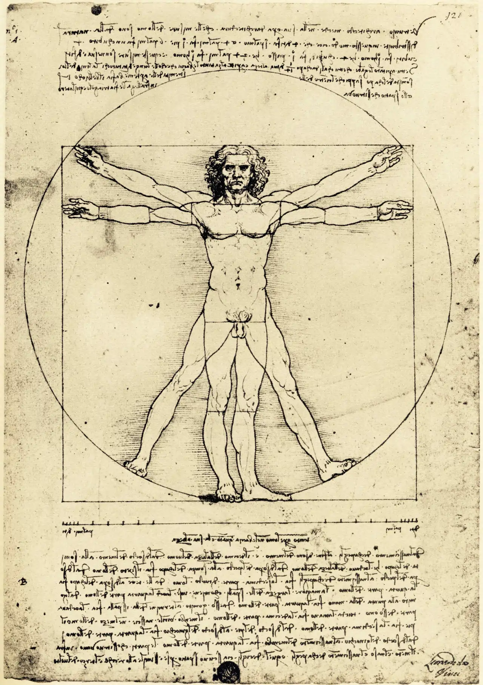
Fuente: The proportions of the human figure (The Vitruvian Man), 1492, Milán, Italia. Disponible en: https://www.wikiart.org/es/leonardo-da-vinci/hombre-de-vitruvio-1492
La figura del “Hombre de Vitruvio” hace parte del tratado “De Architectura”, donde Leonardo afirma que la arquitectura se sustenta en tres principios básicos: la Venustas (belleza), la Firmitas (firmeza) y la Utilitas (utilidad), siendo esta última la referente a la optimización del espacio para poder satisfacer las necesidades espaciales que surgen de las actividades cotidianas del ser humano.
En 1936, el arquitecto alemán Ernst Neufert publicó “Arte de Proyectar en Arquitectura”, que presenta una serie de ilustraciones que establecen de forma sistemática las dimensiones mínimas que deben tener las edificaciones y sus espacios, en relación con el ser humano. Así mismo, en 1948, el arquitecto suizo Le Corbusier desarrolló el Modulor, una figura que representa un esquema de mediciones del cuerpo humano.
Imagen 22. Modulor de Le Corbusier
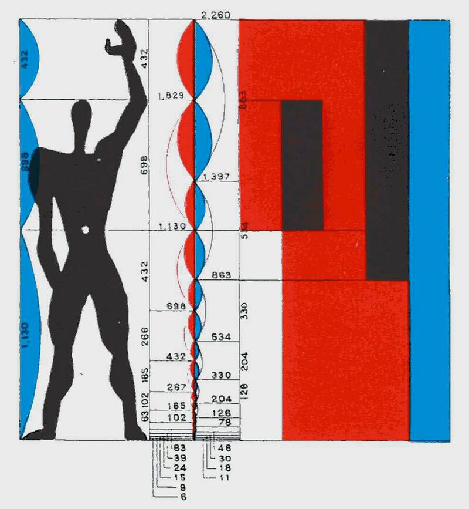
Fuente: UrbiPedia, Archivo de arquitectura, 2013. Disponible en: https://www.urbipedia.org/hoja/Modulor#/media/Archivo:LeCorbusier.modulor.jpg
{kind=link}
Puede decirse que todos los conceptos anteriores se derivaron del concepto de antropometría) 3, entendido en arquitectura como la adaptación de los espacios a las dimensiones y movimientos del cuerpo humano.
2.4.2. Iluminación y ventilación
No menos importantes que lo anterior, estos dos elementos hacen parte del adecuado diseño arquitectónico de los espacios habitables. La iluminación debe ser natural en todos los espacios habitables de la vivienda, un aspecto fundamental para propiciar un entorno confortable puesto que poder disfrutar de la luz solar, influye positivamente en el estado anímico de las personas. La ventilación, a su turno, debe estar presente también en todos los espacios, y para el caso de los baños y las cocinas puede hacerse a través de ductos, lo que contribuye a tener un ambiente interior saludable.
Con las anteriores nociones, se plantea un ejercicio práctico a desarrollar con los estudiantes, que consiste en la conformación de una urbanización de vivienda, empezando por la unidad de vivienda y el lote. Se busca entender cómo, dentro de éste, se conforma una vivienda cumpliendo con las características básicas de habitabilidad y con los requerimientos mínimos en cuanto a dimensiones de los espacios. Hecho eso, se proyectan los barrios y la urbanización completa.
Durante el ejercicio, el estudiante se familiarizará con el desarrollo arquitectónico y urbanístico de la vivienda, al mismo tiempo que, mediante el análisis de una serie de datos cuantitativos, dará paso a preguntas como: ¿Que tipología de vivienda es más conveniente para la ciudad?, ¿qué impacto tiene en el territorio la densidad habitacional?, ¿es sostenible el modelo de desarrollo urbanístico en altura que se ve cada vez más en la ciudad? Estos, entre otros interrogantes fundamentales, surgirán en desarrollo del ejercicio.
2.5. Conformación de la vivienda
En esta sección se culmina la Unidad con un ejercicio práctico que da cuenta de la secuencia de conformación de la vivienda y de la manera en que esta se agrupa para formar una urbanización. Se tiene en cuenta el diseño de una vivienda digna, aplicando las condiciones mínimas de habitabilidad, y así mismo, una serie de condiciones que van surgiendo en la medida que la escala de actuación aumenta (manzana y urbanización).
AutoCAD es el software empleado para desarrollar la sección por ser básico en los programas de diseño. El propósito es que los estudiantes, a través del desarrollo de la Unidad, se familiaricen con las funciones esenciales del programa. Para facilitar la visualización desde cualquier equipo, se acude al visor gratuito Autodesk Viewer. Consulte e interactúe con el modelo unifamiliar y el multifamiliar.
2.6. Metodología
El ejercicio práctico propuesto aborda la vivienda a partir de una metodología que va de lo particular a lo general. Son dos tipologías fundamentales de vivienda: la vivienda unifamiliar, que se desarrolla a partir de un lote y consta de un piso o de dos pisos, y la vivienda multifamiliar, que se desarrolla partiendo de la vivienda de un piso y se transforma en multifamiliar. A partir de la aplicación de una serie de reglas de organización espacial, se explica la transición de una vivienda a una agrupación de vivienda, con sus respectivos parques y zonas verdes, equipamientos y acceso a comercio.
El ejercicio finaliza con una storymap en el que, de manera interactiva, se simula la implantación de una urbanización en un contexto real, enlazada con un visor que permite repasar el desarrollo de toda la secuencia.
2.7. Desarrollo de las viviendas
A continuación, se presenta un breve repaso del desarrollo detallado del ejercicio de conformación de una vivienda, que se encuentra contenido al final del storymap.
2.7.1. Vivienda unifamiliar de un piso
La primera tipología de vivienda que se desarrolla es la de 1 piso, en un lote de 60 m2. Mediante la aplicación de las condiciones mínimas de habitabilidad y las reglas de organización espacial, la vivienda resultante es la siguiente:
Imagen 23. Conformación final de la vivienda unifamiliar de un piso
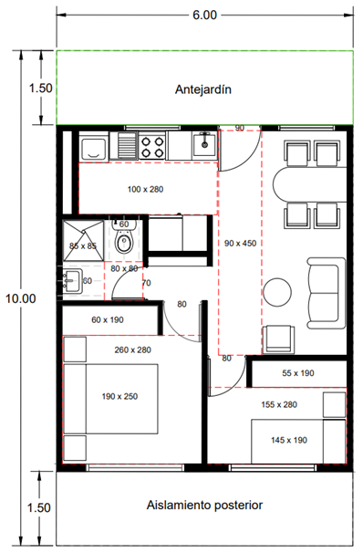
Fuente: Elaboración Sociedad de Mejoras y Ornato de Bogotá
Para tener una idea de la vivienda con una ambientación más real y con unos posibles acabados, se presenta la siguiente ilustración:
Imagen 24. Vivienda unifamiliar de un piso ilustrada
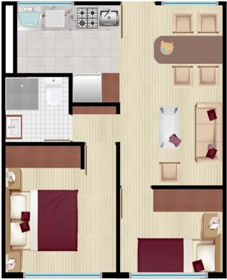
Fuente: Elaboración Sociedad de Mejoras y Ornato de Bogotá
2.7.2. Vivienda unifamiliar de dos pisos
Esta vivienda se desarrolla en un lote con las mismas medidas, un área de 60 m2 (6 m de frente y 10 m de fondo).
Imagen 25. Conformación planta primero piso de la vivienda unifamiliar de dos pisos
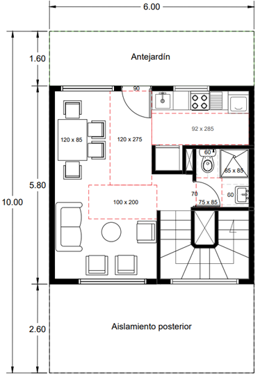
Fuente: Elaboración Sociedad de Mejoras y Ornato de Bogotá
El primer piso en una visualización con sus respectivos acabados, se aprecia en la siguiente ilustración:
Imagen 26. Vivienda unifamiliar primer piso ilustrado
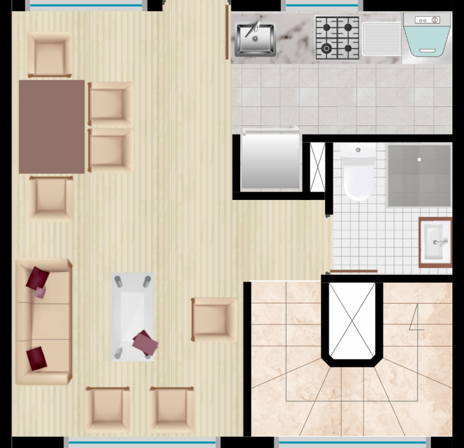
Fuente: Elaboración Sociedad de Mejoras y Ornato de Bogotá
Imagen 27. Conformación planta segundo piso de la vivienda unifamiliar de dos pisos
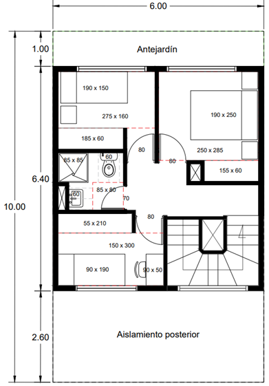
Fuente: Elaboración Sociedad de Mejoras y Ornato de Bogotá
La visualización del piso con sus respectivos acabados, se aprecia en la siguiente ilustración.
Imagen 28. Vivienda unifamiliar segundo piso ilustrado
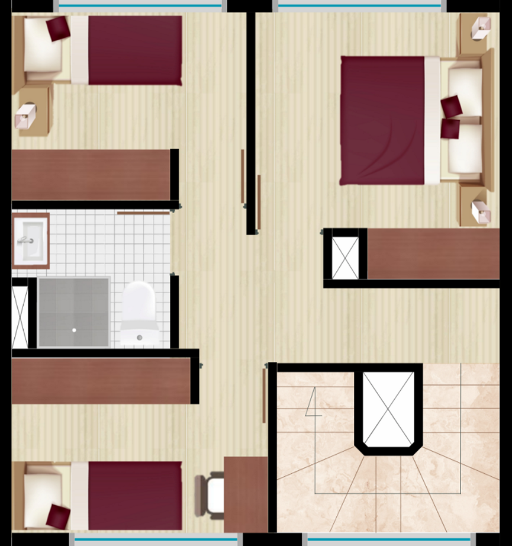
Fuente: Elaboración Sociedad de Mejoras y Ornato de Bogotá
2.8. Desarrollo de las urbanizaciones
2.8.1. Urbanización unifamiliar
Las reglas mínimas de diseño urbano se establecen partiendo de la vivienda conformada. Como los dos tipos de vivienda se desarrollan dentro de las mismas dimensiones de un lote, hacemos una urbanización para cada una de estas viviendas. Es decir, una urbanización de vivienda unifamiliar de 42 m2 y otra urbanización de vivienda unifamiliar de 73,2 m2. Para la urbanización de vivienda multifamiliar, se utilizará como vivienda modelo la vivienda unifamiliar de 42 m2.
Imagen 29. Urbanización unifamiliar
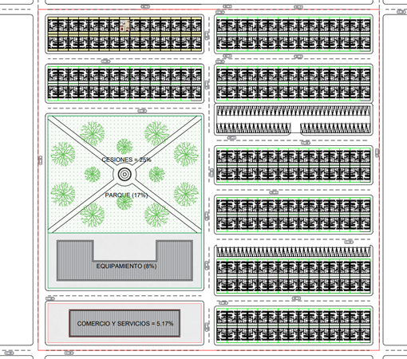
Fuente: Elaboración Sociedad de Mejoras y Ornato de Bogotá
La urbanización resultante se desarrolla en un área de 40.000 m2. La urbanización unifamiliar de viviendas de 2 pisos tiene parámetros de urbanización idénticos a los de la vivienda de 1 piso, por lo que su conformación final es exactamente igual. No obstante, en el archivo DWG, se puede explorar detalladamente su conformación.
2.8.2. Urbanización multifamiliar
Para el desarrollo de una urbanización de viviendas multifamiliares, se parte, en primera instancia, de la vivienda de un piso y de algunas de las reglas generales que sirvieron para la conformación de las urbanizaciones unifamiliares. La vivienda de un piso hace la transición hacia un multifamiliar, adicionando reglas propias de la propiedad horizontal.
Imagen 30. Urbanización multifamiliar
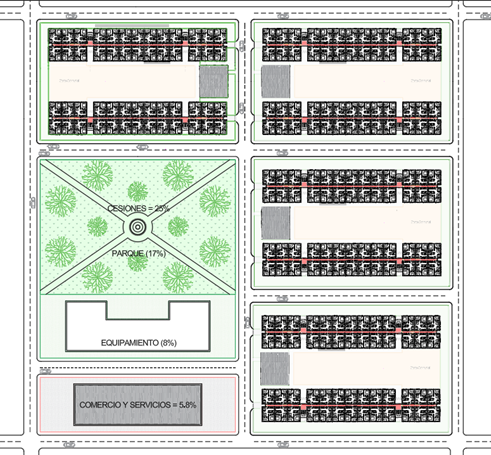
Fuente: Elaboración Sociedad de Mejoras y Ornato de Bogotá
2.9. Datos generales de las urbanizaciones
En las siguientes tablas se agrupan los principales datos cuantitativos a nivel de áreas y otros, como el número de lotes, número de parqueaderos y habitantes, para cada tipo de urbanización. Se trata de mediciones tomadas del desarrollo del ejercicio en AutoCAD, anexo a esta sección.
Tabla 10. Modelo de urbanización de vivienda unifamiliar 1 piso
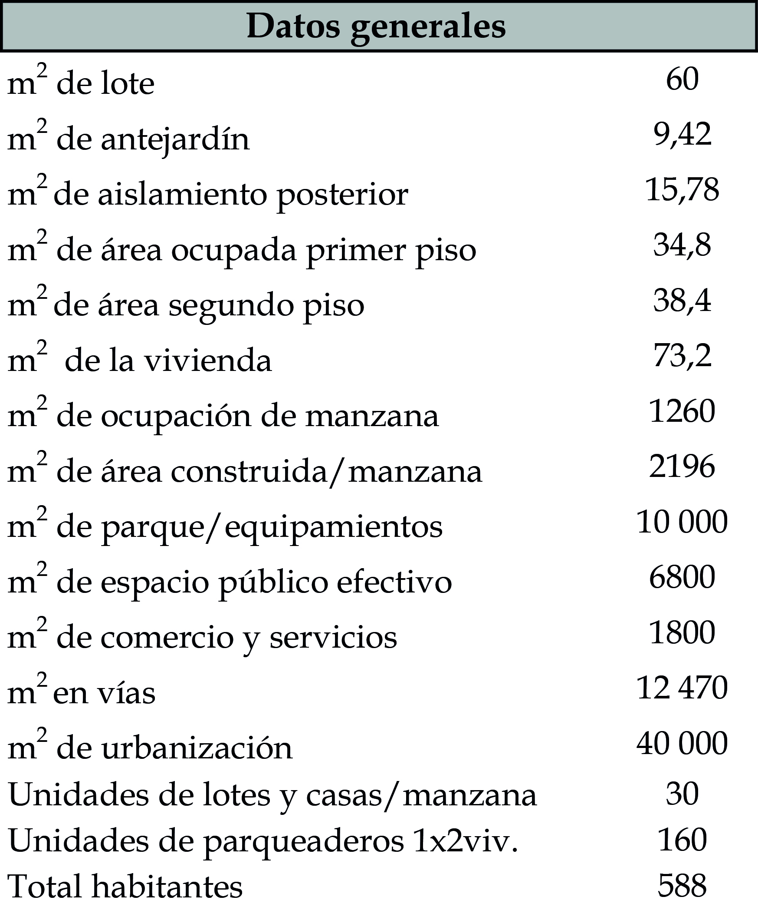
Fuente: Elaboración Sociedad de Mejoras y Ornato de Bogotá
Tabla 11. Modelo de urbanización de vivienda unifamiliar 2 pisos
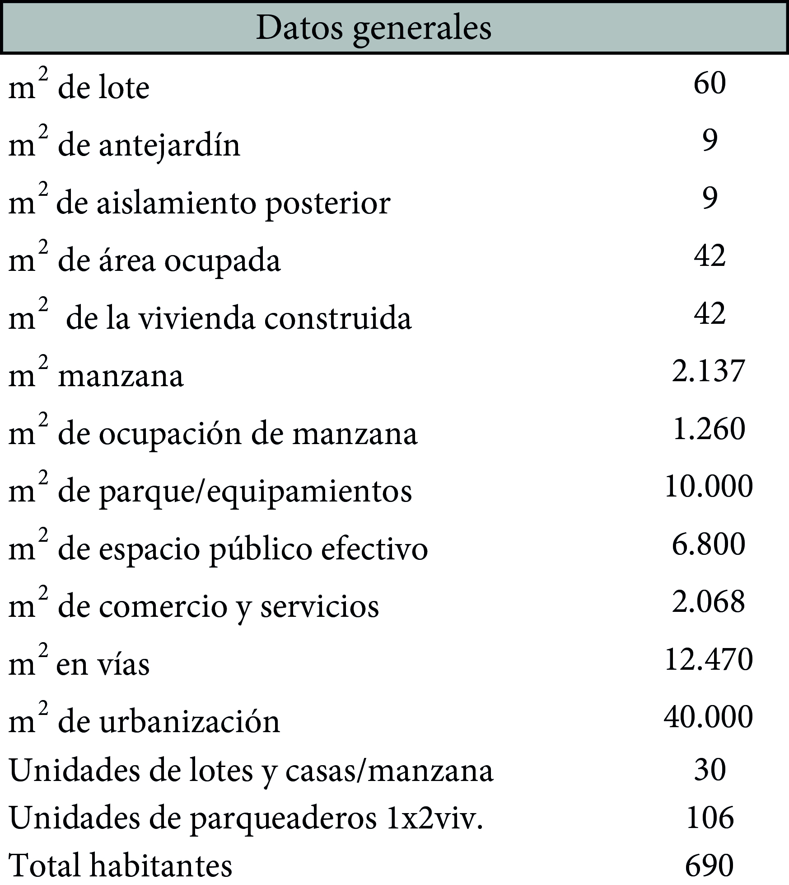
Fuente: Elaboración Sociedad de Mejoras y Ornato de Bogotá
Tabla 12. Modelo de urbanización de vivienda multifamiliar 5 pisos
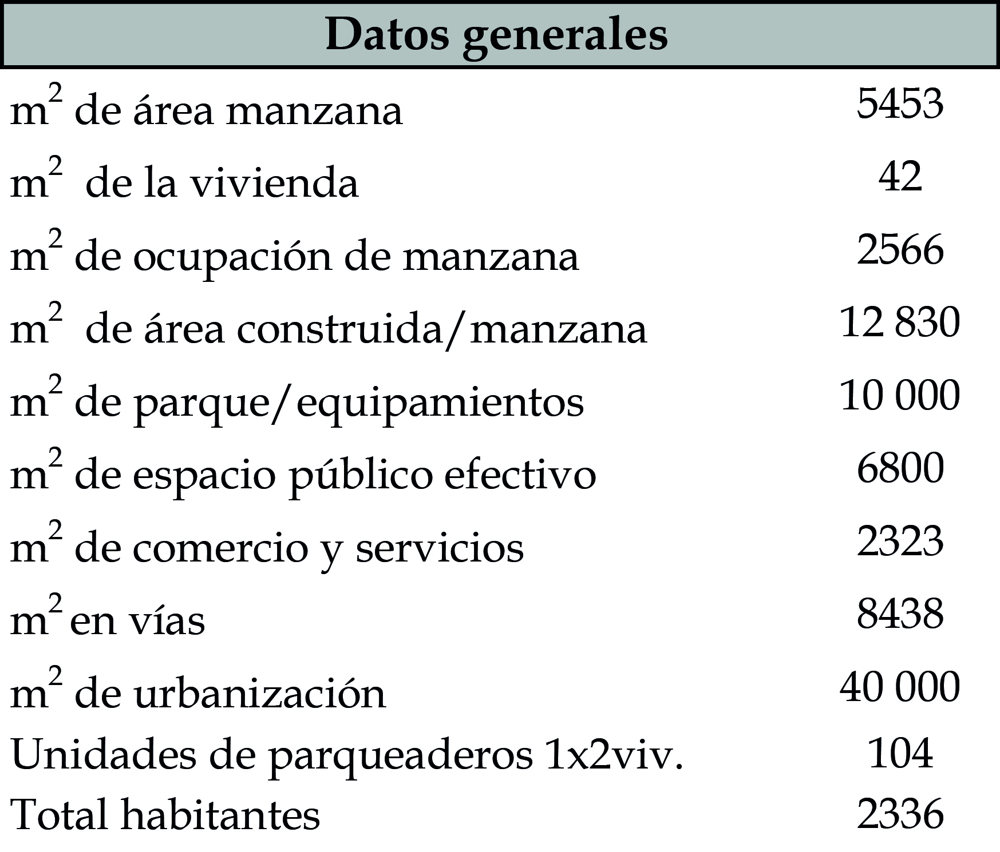
Fuente: Elaboración Sociedad de Mejoras y Ornato de Bogotá
Los anteriores datos son el punto de partida para la construcción de los indicadores que se presentan en las tablas que siguen a continuación.
2.10. Análisis y comparación de indicadores urbanísticos
Al cruzar los datos presentados anteriormente, se pueden obtener indicadores que, para este caso, dan cuenta de índices de ocupación y de construcción, densidades, distribución de los habitantes y distribución del espacio público. Estos indicadores ofrecen un panorama de cómo impacta cada tipo de urbanización en el territorio.
Tabla 13. Indicadores urbanísticos y poblacionales del modelo de vivienda unifamiliar 1 piso
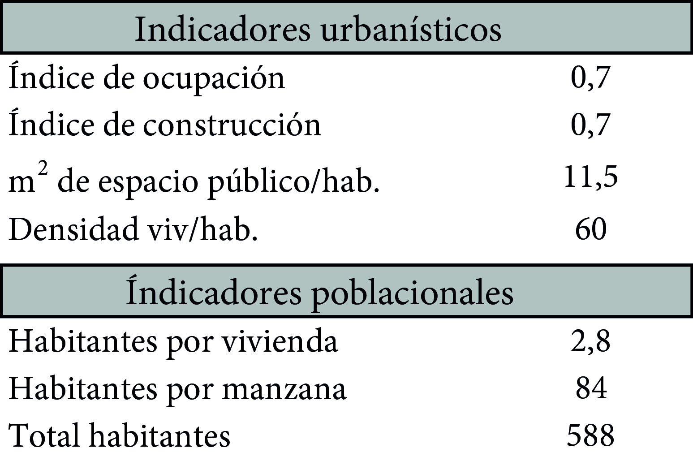
Fuente: Elaboración Sociedad de Mejoras y Ornato de Bogotá
Tabla 14. Indicadores urbanísticos y poblacionales del modelo de vivienda unifamiliar 2 pisos
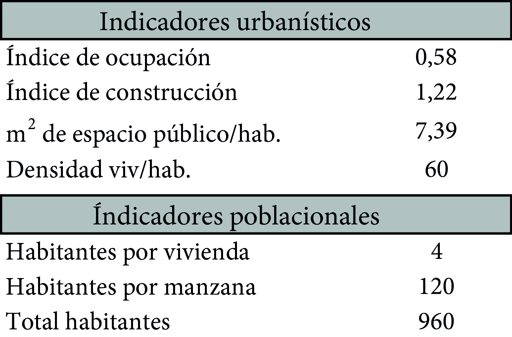
Fuente: Elaboración Sociedad de Mejoras y Ornato de Bogotá
Tabla 15. Indicadores urbanísticos y poblacionales del modelo de vivienda unifamiliar 5 pisos
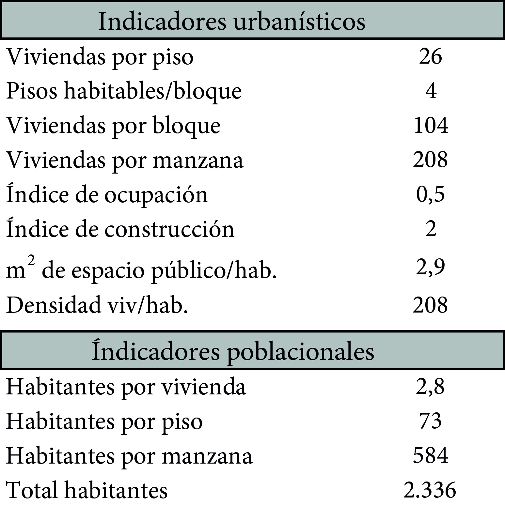
Fuente: Elaboración Sociedad de Mejoras y Ornato de Bogotá
Resulta evidente cómo impacta en la ocupación del suelo cada modelo de urbanización. El modelo de urbanización multifamiliar comparado con los modelos de urbanización unifamiliares puede albergar un mayor número de personas en la misma superficie de suelo, aunque con un impacto en cuanto a los m2 de espacio público por habitante. Esta es, justamente, la importancia de lograr un equilibrio entre la densidad y la disponibilidad de espacio público. Lo anterior, sin contar con aspectos de infraestructura como el acceso a los servicios públicos domiciliarios, el transporte, y el comercio de primera necesidad, entre otros.
2.11. Transición del modelo teórico a un contexto real
Con las cuantificaciones hechas para cada modelo (unifamiliar y multifamiliar), se construyó un storymap en el que cada uno tiene una contextualización real. Para este caso, un área de suelo de expansión urbana de municipio de Soacha, Cundinamarca, de forma que sea posible hacerse a una idea de cómo a partir de una sola vivienda, se llega a conformar toda la ciudad.
En el storymap se puede apreciar el suelo disponible para urbanizar, que para este caso es una de las áreas de suelo de expansión urbana. La ubicación exacta, normalmente, corresponde a un predio sin urbanizarse, que por su clasificación debe urbanizarse mediante un Plan Parcial. Así mimo, se tiene la noción de cómo es la disposición de las viviendas y sus zonas de parqueo; la localización de las cesiones urbanísticas para parques y equipamientos; y, por último, el área destinada al comercio de primera necesidad.
Footnotes
-
“Elementos de una vivienda adecuada”, ONU Hábitat, 2019. Disponible en: _“Elementos de una vivienda adecuada” ↩
-
Ernst Neufert. Arte de proyectar en arquitectura (Barcelona: Editorial Gustavo Gilí, 1995), 38. ↩
-
El significado etimológico de “antropometría” proviene del griego: “anthropos” (hombre) y “metron” (medida), que se combinan para significar “medidas del hombre” o “medidas humanas”. ↩